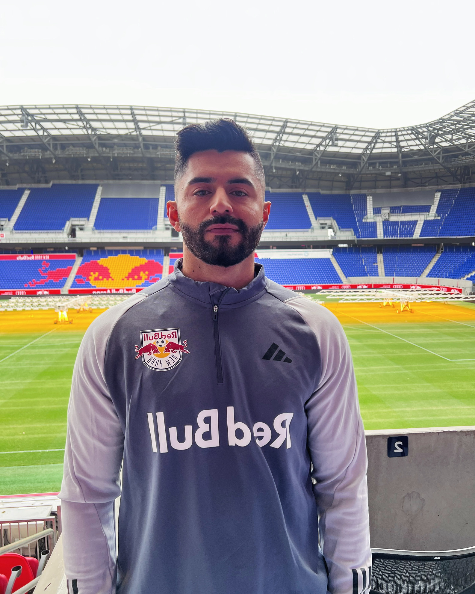
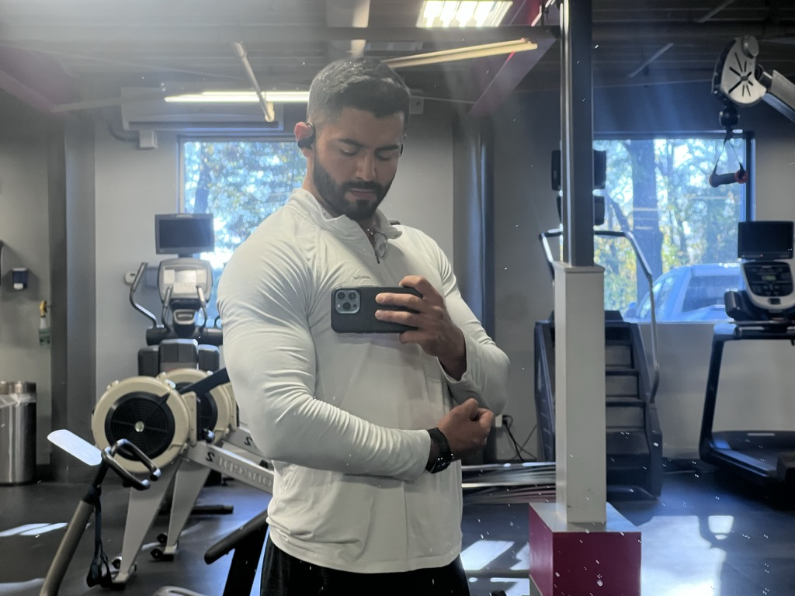
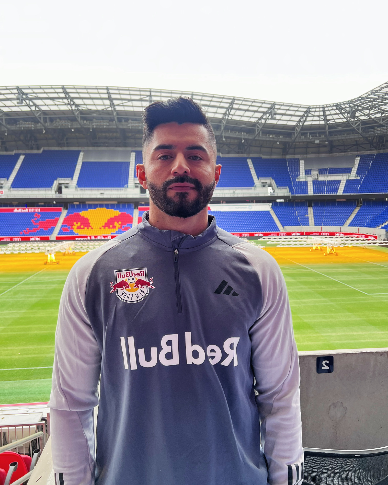
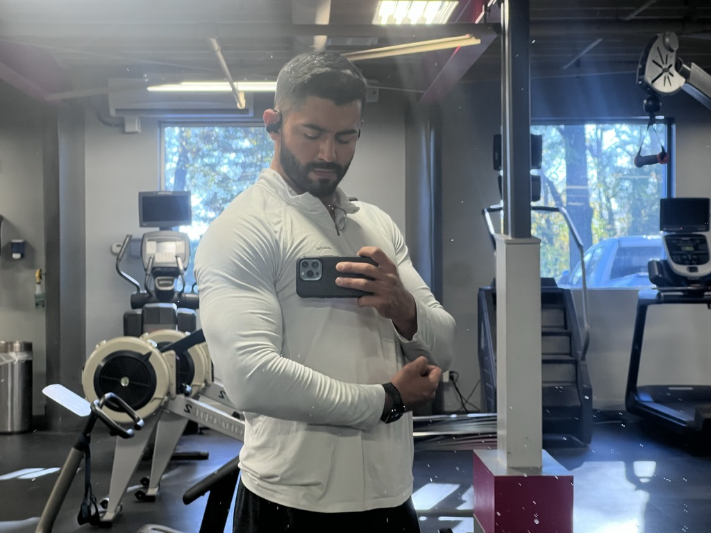

About Me
Greetings! I'm an enthusiastic and dynamic professional with a strong interest in cyber security, dedicated to making meaningful contributions to a forward-thinking security team. Proficient in both English and Spanish, I offer a unique perspective and a commitment to staying current with emerging industry trends. Armed with a versatile set of skills and certifications, I am eager to leverage my expertise in data interpretation, visualization, and trend analysis to generate actionable insights and enhance security measures.
This website showcases my skills and projects, reflecting my journey and accomplishments in the tech industry. Some of my key skills include data analytics, cyber security, and software engineering. In addition to my professional pursuits, I enjoy weight lifting and am a part-time soccer coach. My goal is to transition into an entry-level cyber security role, where I can apply my passion for security and contribute to innovative solutions that protect and strengthen organizational infrastructures. Feel free to visit the Contact Me page to get in touch. I look forward to connecting with like-minded professionals and exploring opportunities to collaborate and grow within the field of cyber security.
 



- Data Analytics
- SoccerPerformanceAcademy
- JTFitness
- SneakerVault